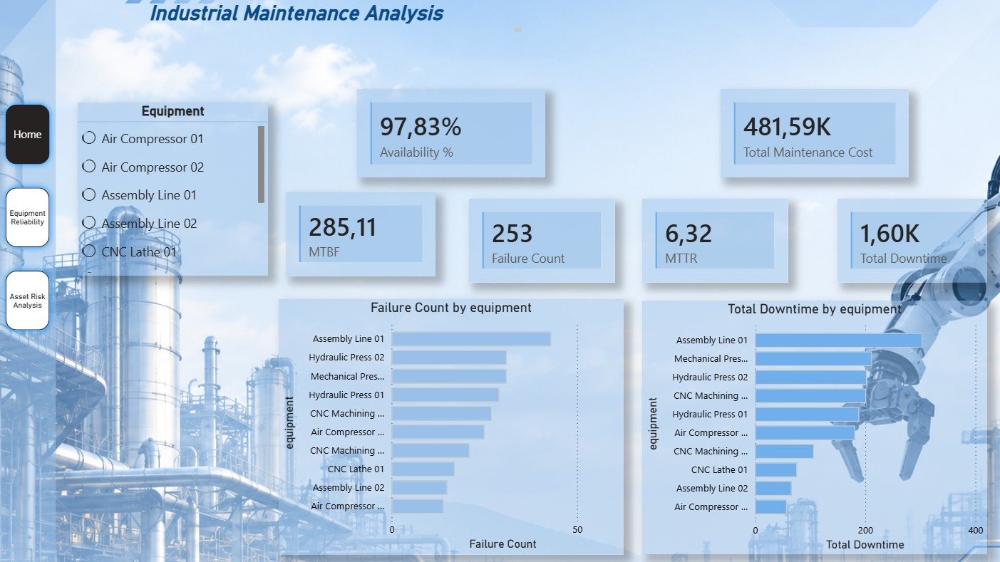

PROJECT / 001
INDUSTRIAL ANALYTICS
SYSTEM OUTPUT
BI / ANALYTICS

COMPLETED
IMR_ANALYTICS_001
Industrial Maintenance Analytics
End-to-end industrial analytics project focused on equipment reliability, maintenance performance, downtime, costs, MTBF, MTTR and asset risk prioritization.
DOMAIN
Industrial Maintenance
FOCUS
Reliability Analytics
PIPELINE
Python → SQL → Power BI
DATABASE
SQLite
Python
SQL
SQLite
Power BI
DAX
VIEW CASE STUDY
→